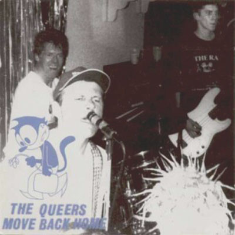

31 Days of Punk
The punk album for 12/12/2025 is:
Move Back Home
by The Queers
Ben's thoughts
A totem to 90’s punk, The Queers released their fourth LP “Move Back Home” in 1995. These New Hampshire rock and roll clowns diverge from the topics of their previous albums, while still harnessing all that silly energy they were known for. Similar to other bands on this list, there is a surprising amount of west coast influence in this record, which is only indicative of how powerful that region of punk rock was. Frontman Joe King, also known affectionately as Joe Queer, sings predominately about the mystery of the feminine, or put more simplistically, his fascination with the women in his high school life. Songs such as “High School Psychopath Pt. 2” and “I Didn’t Get Invited to the Prom” spread the tales of adolescent struggles. The band's garage style recordings in this album transform their mature sound into something reminiscent of a ragtag group of teenage buddies just having fun.
The unique aesthetic of this band is not the only thing going for them, their humor, interwoven into soft lyrics, places them in the main punk domain of the 90’s, when many of these bands found themselves incorporating jokes and gags into their music. “She’s a Cretin,” "Everything's Going My Way,” and “Surf Goddess” all act as proof of their over the top rowdiness.
It is more than apparent that this band took influence from the trailblazers of the northeast such as the New York Dolls and The Stooges, but musically, you will be pleased to hear a plethora of different sounds, I implore you to do some searching around in this album and find the different Mo-town drum breaks Wimpy Rutherford uses. Regardless, if you are looking for a sound to party too, a band with the class of your neighborhood skate-rat, and lyrics that will transport you to senior year, 1995, look no further than the Queers.
Connor's thoughts
A very interesting band to highlight, The Queers, with front-man Joe King (Joe Queer as he was dubbed), were a group of young New Hampshire rascals, filled with that 80s energy and the 70s sound. They rocked the local scene up through New England, and moved coast to coast boasting their Ramones instrumentals and their beach boys melodies, setting the precedent for many punk/pop-punk bands to follow.
Their 5th studio album “Move Back Home” is a love letter to losers. That’s not to say it’s for losers to listen to (I personally really enjoyed it) but rather that the common motifs of the 17 tracks are about living life in juvenile fashion, getting in trouble in high school, being dumped by your girlfriend, screwing around town, and drug use. It’s a rather unserious take on serious topics, and it moves some weight off the impending issues that arise from these actions (Quite literally given the band had problems due to drug use). While it might not be as profound or as publicly respected as other punk records, it's got the surfer vibes and the speedy drums that make everything feel silly and fun, and from the theme of the album, that’s how it was always supposed to make you feel.
Now the band was not steady in the slightest. They have had plenty of controversy over the years, dating back to their name, “The Queers” which was a stab at their local music scene, but especially in the turn of the decade and the century, along with their growing popularity, the name caught more offense. But the band has since taken to the public about their ongoing support for LGBTQ+ issues and marriage equality. On top of this as I mentioned earlier, their heavy drug usage led to falling outs within the band and outside the band, making their story a little blurry over the years. However, in regards to pop-punk, and to the American punk scene, you can’t have a conversation without mentioning the foundations they laid.
So as far as the album goes, it’s the perfect record in this list for something more clear, not only in its lyrics but also in the vocals, the bass, and the drums. It’s a band filled with controversy, and an album filled with hits. So maybe music for “losers” was the wrong term. Maybe it's just great punk music, for anyone wanting a little break from all the screaming, all the banging, all the moving, and just enjoy the blissful tone of King’s guitar for a little while.
Listen on Spotify: